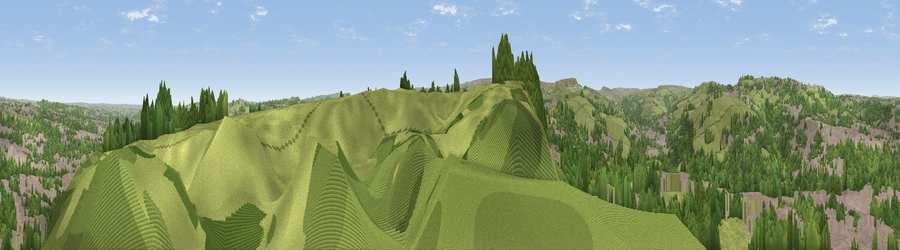

Viewpoint near Linthwaite
#16671 in England · top 25% of its area beats it · near Linthwaite · path 102 mWhere it is
The exact computed spot (SE 10725 14525). Click the marker for map links.
Public access: the nearest public right of way is about 102 m away — the final stretch may cross private land. Computed from Natural England's CRoW access layer and OpenStreetMap rights of way — not the legal definitive map. Always verify locally.
The view, rendered

A 360° render of this exact spot computed from the terrain model, tree cover and land cover — summer colours, afternoon light, calibrated against photographs of famous viewpoints. Real trees, hedges and buildings will differ in detail.
The panorama
Grey silhouette: terrain skyline in each direction (720 bearings, Earth curvature and refraction included). Dashed green: skyline with trees (+15 m) and buildings (+8 m) as obstacles. Blue strip: how far the ground is visible on each bearing.
Where the view opens
Wedge length = distance to the farthest visible ground on that bearing (vegetation-aware). Rings at 10, 25 and 50 km.
What fills the view
43% grassland · 32% woodland · 25% built-up
Angular shares of the visible panorama (visual magnitude), not map area. Landscape diversity 0.48 (0–1 Shannon).
Key numbers
More beautiful places nearby
The staircase of upgrades: each row has a higher view potential than everything closer. Driving times are estimates from straight-line distance, calibrated against real road routing — check an actual route before setting out.
| Place | Direction | Drive | Score |
|---|---|---|---|
| Wholestone Moor | NW · 4 km | ~9 min | 66.4 |
| Castle Hill | E · 4 km | ~10 min | 70.2 |
| Viewpoint near Marsden | SW · 5 km | ~11 min | 71.0 |
| Viewpoint near Jackson Bridge | SE · 10 km | ~20 min | 73.5 |
| Viewpoint near Greenfield | SW · 16 km | ~28 min | 76.0 |
| Viewpoint near Carrbrook | SW · 19 km | ~32 min | 77.1 |
| Viewpoint near Edenfield | W · 29 km | ~45 min | 77.5 |
| Darwen Hill | W · 43 km | ~63 min | 80.7 |
53.62715, -1.83931 · source: screening · position refined by local search. Computed location — check access rights before visiting.